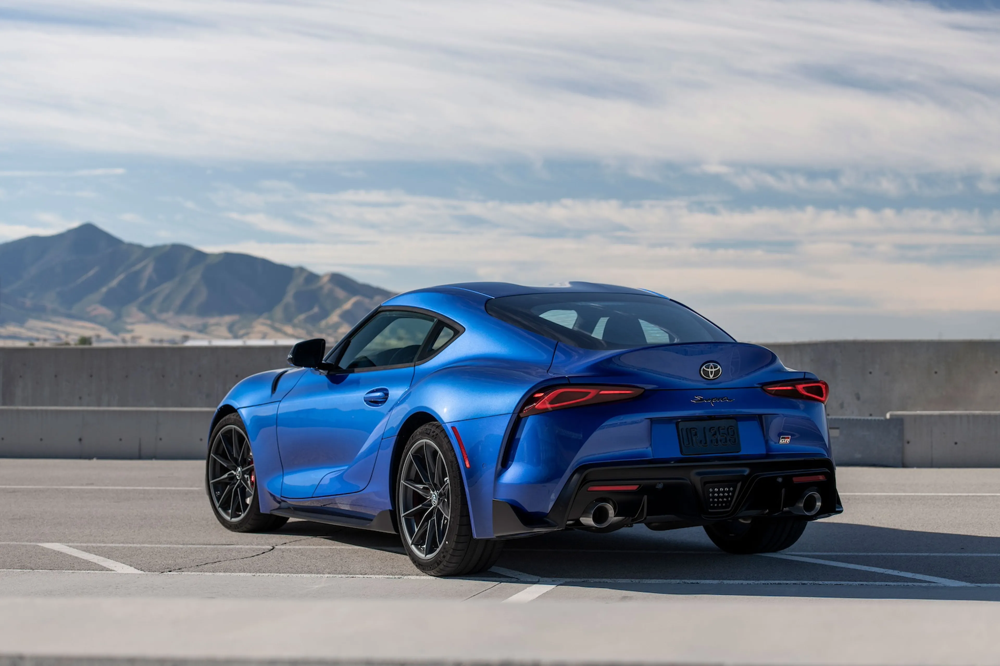
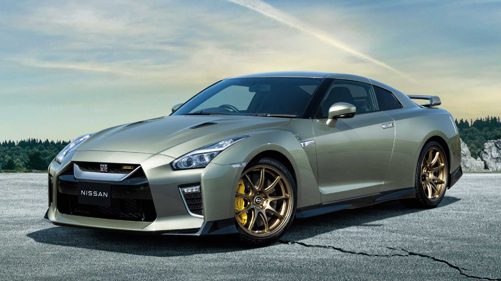
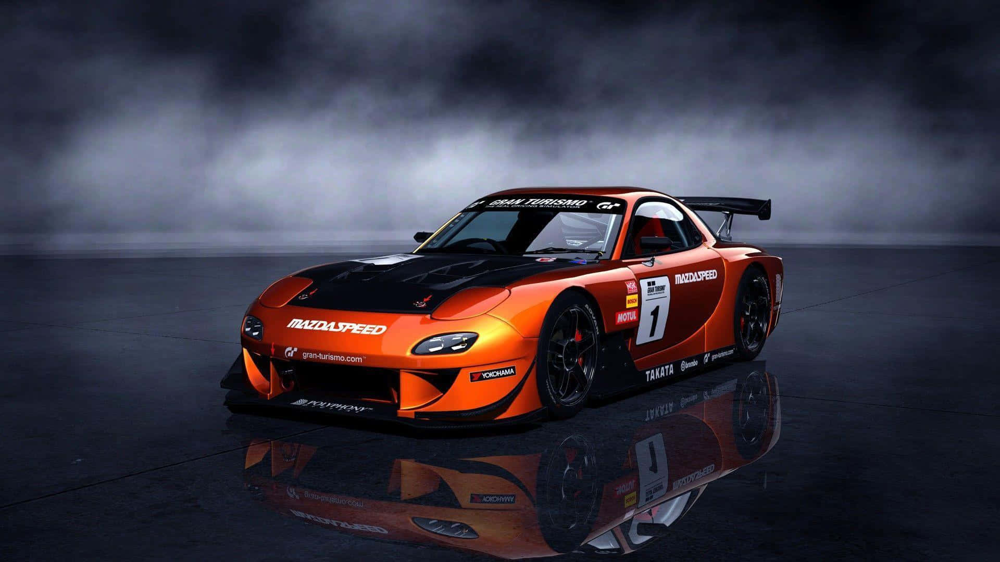

TODO SOBRE WHEELS
VEHÍCULOS JAPONESES SOBRE RUEDAS
Los coches japoneses destacan por su fiabilidad, tecnología y diseño vanguardista. Desde los icónicos deportivos como el Toyota Supra y el Nissan Skyline, hasta el legendario Mazda RX-7, Japón ha dado forma a una cultura automovilística admirada en todo el mundo.
“Japanese engineering, timeless performance.” – Espíritu del JDM.
Modelos emblemáticos


